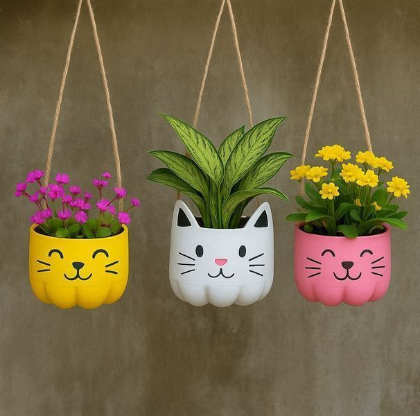

Produk Kami
penjelasan produk recycle dari barang bekas yang tidak terpakai
Pot Bunga dari Botol Plastik Bekas

Ulasan Produk
Pot bunga dari botol plastik bekas merupakan produk daur ulang yang sederhana dan bermanfaat. Botol plastik yang sudah tidak digunakan dapat dipotong dan dihias menjadi pot untuk menanam bunga atau tanaman kecil. Produk ini dapat mempercantik halaman rumah sekaligus mengurangi sampah plastik. Biaya pembuatannya juga relatif murah karena bahan utamanya berasal dari barang bekas yang udah ditemukan.
Alat
- Gunting
- Cutter
- Penggaris
- Spidol
- Kuas
Bahan
- Botol plastik bekas
- Cat warna
- Tanah atau media tanah
- Bibit tanaman atau bunga
- Tali atau pita hias
- Lem atau perekat jika diperlukan
Langkah Kerja
- Bersihkan botol plastik bekas, lalu keringkan.
- Gambar pola pada botol memakai spidol dan penggaris.
- Potong botol sesuai pola memakai gunting atau cutter.
- Warnai dan hias botol memakai cat warna.
- Pasang tali atau pita hias untuk menggantung pot.
- Isi dengan tanah, lalu tanam bibit tanaman atau bunga.
Biaya Alat
- Gunting= Rp5.000
- Cutter= Rp5.000
- Penggaris= Rp3.000
- Spidol= Rp3.000
- Kuas= Rp3.000
Total alat= Rp19.000
Biaya Bahan
- Botol plastik bekas= Rp0
- Cat warna= Rp8.000
- Tanah atau media tanam= Rp5.000
- Bibit bunga= Rp5.000
- Tali atau pita hias= Rp3.000
- Lem atau perekat= Rp3.000
Total alat= Rp24.000
Harga Jual dan Laba
Biaya bahan per produk
= Rp24.000
Harga Jual
= Rp35.000
Laba per Produk
= Rp11.000